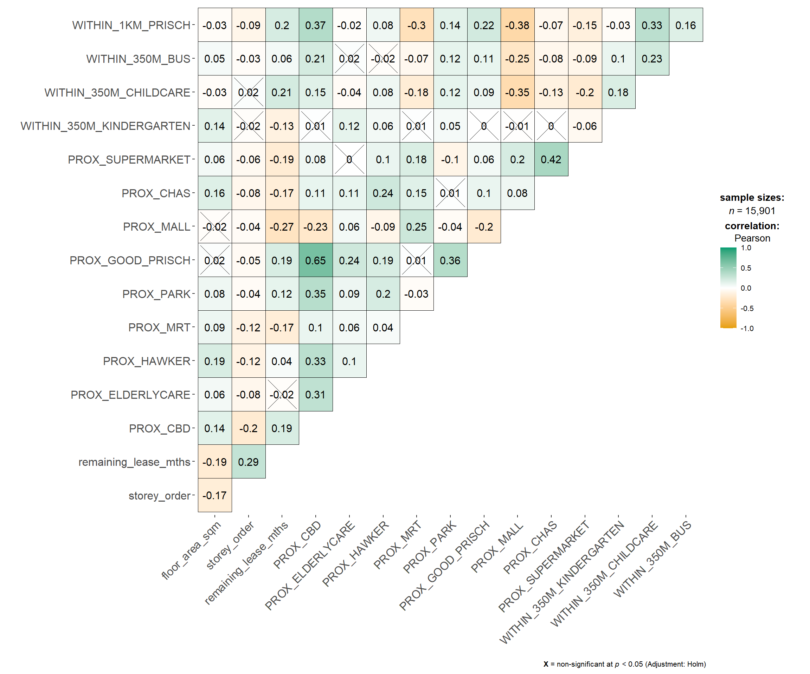
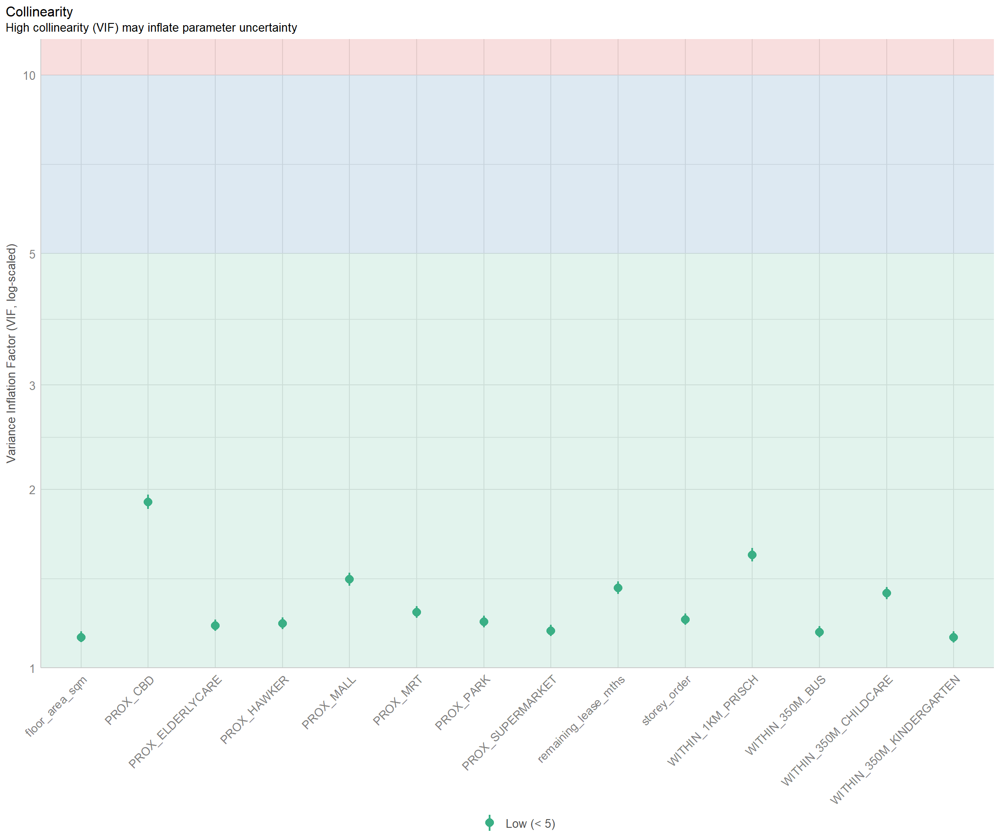
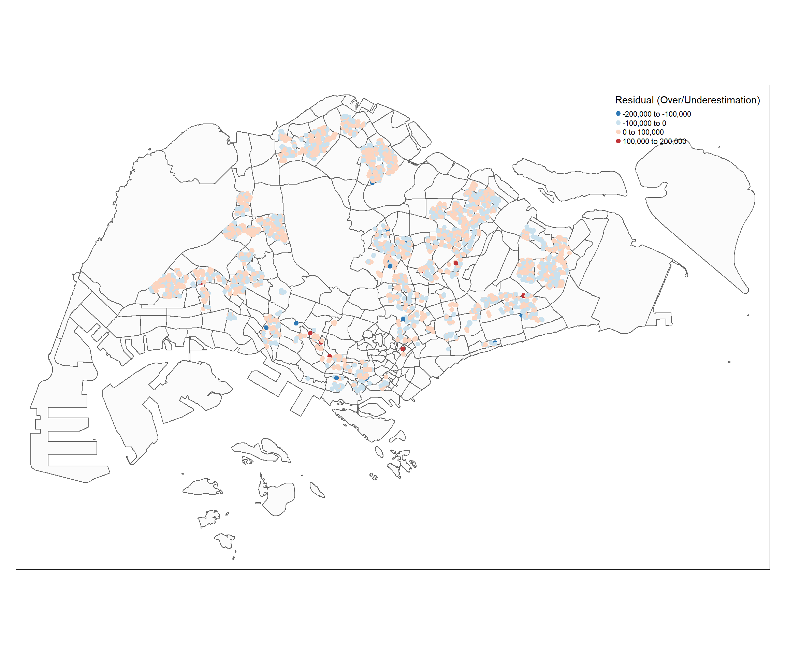

pacman::p_load(sf, spdep, GWmodel, SpatialML, tmap, rsample, Metrics, tidyverse, knitr, kableExtra,
httr, jsonlite, rvest)In Class Exercise 08
Data Sources
(saved under ‘data’ folder)
resale.csv containing HDB resale information
A data file mdata.rds that consists of the following information:
- Aspatial dataset:
- HDB Resale data: a list of HDB resale transacted prices in Singapore from Jan 2017 onwards. It is in csv format which can be downloaded from Data.gov.sg.
- Geospatial dataset:
- MP14_SUBZONE_WEB_PL: a polygon feature data providing information of URA 2014 Master Plan Planning Subzone boundary data. It is in ESRI shapefile format. This data set was also downloaded from Data.gov.sg
- Locational factors with geographic coordinates:
Downloaded from Data.gov.sg.
Eldercare data is a list of eldercare in Singapore. It is in shapefile format.
Hawker Centre data is a list of hawker centres in Singapore. It is in geojson format.
Parks data is a list of parks in Singapore. It is in geojson format.
Supermarket data is a list of supermarkets in Singapore. It is in geojson format.
CHAS clinics data is a list of CHAS clinics in Singapore. It is in geojson format.
Childcare service data is a list of childcare services in Singapore. It is in geojson format.
Kindergartens data is a list of kindergartens in Singapore. It is in geojson format.
Downloaded from Datamall.lta.gov.sg.
MRT data is a list of MRT/LRT stations in Singapore with the station names and codes. It is in shapefile format.
Bus stops data is a list of bus stops in Singapore. It is in shapefile format.
- Locational factors without geographic coordinates:
Downloaded from Data.gov.sg.
- Primary school data is extracted from the list on General information of schools from data.gov portal. It is in csv format.
Retrieved/Scraped from other sources
- CBD coordinates obtained from Google.
- Shopping malls data is a list of Shopping malls in Singapore obtained from Wikipedia.
- Good primary schools is a list of primary schools that are ordered in ranking in terms of popularity and this can be found at Local Salary Forum.
Setting Up
Load Packages
-sf package to perform geospatial wrangling tasks
-spdep package to calculate spatial weights tasks
- GWModel package for calibrating geographical weighted family of models
- SpatialML package for calibrating geographical random forest model
- tmap package for plotting tasks
- rsample package to split the data into training and test sets
- Metricspackage for computing RMSE
- httr, jsonlite and rvest package for getting lat lon data for Take Home Ex 03
-tidyverse package for reading csv files, dataframe processing tasks
Importing Data
First, I will import the data
# Import dataset for take home ex 03
resale <- read_csv("data/aspatial/resale.csv") %>%
filter(month >= "2023-01" & month <= "2024-09")Rows: 192234 Columns: 11
── Column specification ────────────────────────────────────────────────────────
Delimiter: ","
chr (8): month, town, flat_type, block, street_name, storey_range, flat_mode...
dbl (3): floor_area_sqm, lease_commence_date, resale_price
ℹ Use `spec()` to retrieve the full column specification for this data.
ℹ Specify the column types or set `show_col_types = FALSE` to quiet this message.# Import input datasets
mdata <- read_rds("data/mdata.rds")Getting Lat Lon with API
First, i will need to do some minor preprocessing. sort() and unique() are done to ensure that the data is ordered and only for unique addresses.
# Preprocess resale data
resale_tidy <- resale %>%
mutate(address = paste(block,street_name)) %>%
mutate(remaining_lease_yr = as.integer(
str_sub(remaining_lease, 0, 2)))%>%
mutate(remaining_lease_mth = as.integer(
str_sub(remaining_lease, 9, 11)))
# Order data
add_list <- sort(unique(resale_tidy$address))Function to retrieve lat lon (Using OneMap API)
Using a function, I can retrieve latitude and longitude data for each unique HDB address.
get_coords <- function(add_list){
# Create a data frame to store all retrieved coordinates
postal_coords <- data.frame()
for (i in add_list){
#print(i)
r <- GET('https://www.onemap.gov.sg/api/common/elastic/search?',
query=list(searchVal=i,
returnGeom='Y',
getAddrDetails='Y'))
data <- fromJSON(rawToChar(r$content))
found <- data$found
res <- data$results
# Create a new data frame for each address
new_row <- data.frame()
# If single result, append
if (found == 1){
postal <- res$POSTAL
lat <- res$LATITUDE
lng <- res$LONGITUDE
new_row <- data.frame(address= i,
postal = postal,
latitude = lat,
longitude = lng)
}
# If multiple results, drop NIL and append top 1
else if (found > 1){
# Remove those with NIL as postal
res_sub <- res[res$POSTAL != "NIL", ]
# Set as NA first if no Postal
if (nrow(res_sub) == 0) {
new_row <- data.frame(address= i,
postal = NA,
latitude = NA,
longitude = NA)
}
else{
top1 <- head(res_sub, n = 1)
postal <- top1$POSTAL
lat <- top1$LATITUDE
lng <- top1$LONGITUDE
new_row <- data.frame(address= i,
postal = postal,
latitude = lat,
longitude = lng)
}
}
else {
new_row <- data.frame(address= i,
postal = NA,
latitude = NA,
longitude = NA)
}
# Add the row
postal_coords <- rbind(postal_coords, new_row)
}
return(postal_coords)
}# Get each coordindates
coords <- get_coords(add_list)
# Save coordinates to rds file
write_rds(coords, "data/processed/coords_full.rds")Data Sampling
Note that there is no stratification here. There should be, possibly by town.
# Set seed
set.seed(1234)
# Train test split
resale_split <- initial_split(mdata,
prop = 6.5/10,)
# Create train test datasets
train_data <- training(resale_split)
test_data <- testing(resale_split)Once done, those should be saved as RDS files.
# Save data to rds
write_rds(train_data, "data/processed/train_data.rds")
write_rds(test_data, "data/processed/test_data.rds")Multicolinearity Check
mdata_nogeo <- mdata %>%
st_drop_geometry()
ggstatsplot::ggcorrmat(mdata_nogeo[, 2:17])
Building Non-Spatial Multiple Linear Regression
When building predictive model, do not load all variables (do that for explanatory model). Also, I need to use train_data.
# Build model
price_mlr <- lm(resale_price ~ floor_area_sqm +
storey_order + remaining_lease_mths +
PROX_CBD + PROX_ELDERLYCARE + PROX_HAWKER +
PROX_MRT + PROX_PARK + PROX_MALL +
PROX_SUPERMARKET + WITHIN_350M_KINDERGARTEN +
WITHIN_350M_CHILDCARE + WITHIN_350M_BUS +
WITHIN_1KM_PRISCH,
data=train_data)
# Check model with olsrr
olsrr::ols_regress(price_mlr) Model Summary
--------------------------------------------------------------------------
R 0.859 RMSE 61604.120
R-Squared 0.737 MSE 3800583670.022
Adj. R-Squared 0.737 Coef. Var 14.193
Pred R-Squared 0.737 AIC 257320.224
MAE 47485.556 SBC 257436.117
--------------------------------------------------------------------------
RMSE: Root Mean Square Error
MSE: Mean Square Error
MAE: Mean Absolute Error
AIC: Akaike Information Criteria
SBC: Schwarz Bayesian Criteria
ANOVA
--------------------------------------------------------------------------------
Sum of
Squares DF Mean Square F Sig.
--------------------------------------------------------------------------------
Regression 1.100899e+14 14 7.863561e+12 2069.04 0.0000
Residual 3.922202e+13 10320 3800583670.022
Total 1.493119e+14 10334
--------------------------------------------------------------------------------
Parameter Estimates
------------------------------------------------------------------------------------------------------------------
model Beta Std. Error Std. Beta t Sig lower upper
------------------------------------------------------------------------------------------------------------------
(Intercept) 107601.073 10601.261 10.150 0.000 86820.546 128381.599
floor_area_sqm 2780.698 90.579 0.164 30.699 0.000 2603.146 2958.251
storey_order 14299.298 339.115 0.234 42.167 0.000 13634.567 14964.029
remaining_lease_mths 344.490 4.592 0.442 75.027 0.000 335.489 353.490
PROX_CBD -16930.196 201.254 -0.586 -84.124 0.000 -17324.693 -16535.700
PROX_ELDERLYCARE -14441.025 994.867 -0.079 -14.516 0.000 -16391.157 -12490.893
PROX_HAWKER -19265.648 1273.597 -0.083 -15.127 0.000 -21762.144 -16769.151
PROX_MRT -32564.272 1744.232 -0.105 -18.670 0.000 -35983.305 -29145.240
PROX_PARK -5712.625 1483.885 -0.021 -3.850 0.000 -8621.328 -2803.922
PROX_MALL -14717.388 2007.818 -0.044 -7.330 0.000 -18653.100 -10781.675
PROX_SUPERMARKET -26881.938 4189.624 -0.035 -6.416 0.000 -35094.414 -18669.462
WITHIN_350M_KINDERGARTEN 8520.472 632.812 0.072 13.464 0.000 7280.038 9760.905
WITHIN_350M_CHILDCARE -4510.650 354.015 -0.074 -12.741 0.000 -5204.589 -3816.711
WITHIN_350M_BUS 813.493 222.574 0.020 3.655 0.000 377.205 1249.781
WITHIN_1KM_PRISCH -8010.834 491.512 -0.102 -16.298 0.000 -8974.293 -7047.376
------------------------------------------------------------------------------------------------------------------Multicolinearity Check with VIF
# Check multicolinearity
vif <- performance::check_collinearity(price_mlr)
kable(vif,
caption = "Variance Inflation Factor (VIF) Results") %>%
kable_styling(font_size = 18)| Term | VIF | VIF_CI_low | VIF_CI_high | SE_factor | Tolerance | Tolerance_CI_low | Tolerance_CI_high |
|---|---|---|---|---|---|---|---|
| floor_area_sqm | 1.126308 | 1.104360 | 1.152871 | 1.061276 | 0.8878567 | 0.8673997 | 0.9055016 |
| storey_order | 1.206586 | 1.181102 | 1.235657 | 1.098447 | 0.8287846 | 0.8092862 | 0.8466672 |
| remaining_lease_mths | 1.363528 | 1.331762 | 1.398335 | 1.167702 | 0.7333919 | 0.7151363 | 0.7508850 |
| PROX_CBD | 1.905054 | 1.852553 | 1.960788 | 1.380237 | 0.5249196 | 0.5099991 | 0.5397957 |
| PROX_ELDERLYCARE | 1.178400 | 1.154108 | 1.206522 | 1.085541 | 0.8486080 | 0.8288284 | 0.8664703 |
| PROX_HAWKER | 1.187828 | 1.163132 | 1.216262 | 1.089875 | 0.8418729 | 0.8221915 | 0.8597474 |
| PROX_MRT | 1.240457 | 1.213579 | 1.270718 | 1.113758 | 0.8061545 | 0.7869568 | 0.8240092 |
| PROX_PARK | 1.195883 | 1.170847 | 1.224588 | 1.093564 | 0.8362021 | 0.8166011 | 0.8540825 |
| PROX_MALL | 1.409846 | 1.376277 | 1.446409 | 1.187369 | 0.7092975 | 0.6913675 | 0.7265978 |
| PROX_SUPERMARKET | 1.154751 | 1.131493 | 1.182124 | 1.074594 | 0.8659873 | 0.8459353 | 0.8837880 |
| WITHIN_350M_KINDERGARTEN | 1.125809 | 1.103886 | 1.152360 | 1.061042 | 0.8882499 | 0.8677846 | 0.9058910 |
| WITHIN_350M_CHILDCARE | 1.335594 | 1.304923 | 1.369351 | 1.155679 | 0.7487304 | 0.7302729 | 0.7663289 |
| WITHIN_350M_BUS | 1.148544 | 1.125564 | 1.175729 | 1.071701 | 0.8706679 | 0.8505364 | 0.8884435 |
| WITHIN_1KM_PRISCH | 1.550879 | 1.511876 | 1.592853 | 1.245343 | 0.6447958 | 0.6278044 | 0.6614298 |
plot(vif) +
theme(axis.text.x = element_text(angle = 45, hjust = 1))Variable `Component` is not in your data frame :/
Predictive Modelling with MLR
Computing Adaptive Bandwidth
# Compute adaptive bandwidth
bw_adaptive <- bw.gwr(resale_price ~ floor_area_sqm +
storey_order + remaining_lease_mths +
PROX_CBD + PROX_ELDERLYCARE + PROX_HAWKER +
PROX_MRT + PROX_PARK + PROX_MALL +
PROX_SUPERMARKET + WITHIN_350M_KINDERGARTEN +
WITHIN_350M_CHILDCARE + WITHIN_350M_BUS +
WITHIN_1KM_PRISCH,
data=train_data,
approach="CV",
kernel="gaussian",
adaptive=TRUE,
longlat=FALSE)# Save adaptive bandwidth
write_rds(bw_adaptive, "data/model/bw_adaptive.rds")# Calibrate gwr-based hedonic pricing model
gwr_adaptive <- gwr.basic(formula = resale_price ~
floor_area_sqm + storey_order +
remaining_lease_mths + PROX_CBD +
PROX_ELDERLYCARE + PROX_HAWKER +
PROX_MRT + PROX_PARK + PROX_MALL +
PROX_SUPERMARKET + WITHIN_350M_KINDERGARTEN +
WITHIN_350M_CHILDCARE + WITHIN_350M_BUS +
WITHIN_1KM_PRISCH,
data=train_data,
bw = bw_adaptive,
kernel = 'gaussian',
adaptive=TRUE,
longlat = FALSE)# Save calibrated model
write_rds(gwr_adaptive, "data/model/gwr_adaptive.rds")# Compute test data adaptive bandwidth
gwr_bw_test_adaptive <- bw.gwr(resale_price ~ floor_area_sqm +
storey_order + remaining_lease_mths +
PROX_CBD + PROX_ELDERLYCARE + PROX_HAWKER +
PROX_MRT + PROX_PARK + PROX_MALL +
PROX_SUPERMARKET + WITHIN_350M_KINDERGARTEN +
WITHIN_350M_CHILDCARE + WITHIN_350M_BUS +
WITHIN_1KM_PRISCH,
data=test_data,
approach="CV",
kernel="gaussian",
adaptive=TRUE,
longlat=FALSE)# Compute predicted values
gwr_pred <- gwr.predict(formula = resale_price ~
floor_area_sqm + storey_order +
remaining_lease_mths + PROX_CBD +
PROX_ELDERLYCARE + PROX_HAWKER +
PROX_MRT + PROX_PARK + PROX_MALL +
PROX_SUPERMARKET + WITHIN_350M_KINDERGARTEN +
WITHIN_350M_CHILDCARE + WITHIN_350M_BUS +
WITHIN_1KM_PRISCH,
data=train_data_sp,
predictdata = test_data,
bw = bw_adaptive,
kernel = 'gaussian',
adaptive=TRUE,
longlat = FALSE)Predictive Modelling with SpatialML
Since I’m using SpatialML (based on ranger package), I will need to prepare the coordinates data
# Get coordinates from full, training and test data
coords <- st_coordinates(mdata)
coords_train <- st_coordinates(train_data)
coords_test <- st_coordinates(test_data)Also, i need to drop the geometry field.
# Drop geometry
train_data_nogeom <- train_data %>%
st_drop_geometry()Calibrating RF Model
# Set seed
set.seed(1234)
# Calibrate random forest model
rf <- ranger(resale_price ~ floor_area_sqm + storey_order +
remaining_lease_mths + PROX_CBD + PROX_ELDERLYCARE +
PROX_HAWKER + PROX_MRT + PROX_PARK + PROX_MALL +
PROX_SUPERMARKET + WITHIN_350M_KINDERGARTEN +
WITHIN_350M_CHILDCARE + WITHIN_350M_BUS +
WITHIN_1KM_PRISCH,
data=train_data_nogeom)
# Check result
rfCalibrating GRF Model
Note that it may not be wise to run the model with default parameters - i.e. ntree = 500 due to complexity issues.
# Set seed
set.seed(42)
# Calibrate geographic random forest model
gwRF_adaptive <- grf(formula = resale_price ~ floor_area_sqm + storey_order +
remaining_lease_mths + PROX_CBD + PROX_ELDERLYCARE +
PROX_HAWKER + PROX_MRT + PROX_PARK + PROX_MALL +
PROX_SUPERMARKET + WITHIN_350M_KINDERGARTEN +
WITHIN_350M_CHILDCARE + WITHIN_350M_BUS +
WITHIN_1KM_PRISCH,
dframe=train_data_nogeom,
bw=55,
ntree = 100, # default - 500
mtry = 2, # default - p/3 ~ 4
kernel="adaptive",
coords=coords_train)# Save model output
write_rds(gwRF_adaptive, "data/model/gwRF_adaptive.rds")# Load model output
gwRF_adaptive <- read_rds("data/model/gwRF_adaptive.rds")Global.model is using ranger object.
- Local.Variable.Importance - importance calculated for every data
- LGofFit - For each data point, calculates a model to measure local goodness of fit
- Forests - Each forest contains various metrics (i.e. sample size).
Predict with Test Data
Since the grf needs the coordinates data as part of the input parameters, I will need to bind the coordinates data on top of dropping the geometry data.
test_data_nogeom <- cbind(
test_data, coords_test) %>%
st_drop_geometry() gwRF_pred <- predict.grf(gwRF_adaptive,
test_data_nogeom,
x.var.name="X",
y.var.name="Y",
local.w=1,
global.w=0,
nthreads = 4)GRF_pred <- read_rds("data/model/GRF_pred.rds")
GRF_pred_df <- as.data.frame(GRF_pred)
# Combine predicted values with test data
test_data_pred <- cbind(test_data, GRF_pred_df)Plot as Map Form
A common question is which properties tend to overestimate/underestimate with the modelling. I would need to get the residual values from comparing the actual resale prices to the predicted prices.
# Calculate overestimation/underestimation
test_data_pred <- test_data_pred %>%
mutate(residual = resale_price - GRF_pred)The mpsz geospatial data is loaded in to provide the geographical boundaries for Singapore.
# Import geospatial data
mpsz = st_read(dsn = "data/geospatial", layer = "MP14_SUBZONE_WEB_PL") %>%
st_transform(3414)Reading layer `MP14_SUBZONE_WEB_PL' from data source
`C:\Users\Henry\Desktop\SMU Masters\2024-2025 T1\Geospatial Analytics & Applications\Project\GeospatialWebsite\In-Class_Ex\In-Class_Ex_08\data\geospatial'
using driver `ESRI Shapefile'
Simple feature collection with 323 features and 15 fields
Geometry type: MULTIPOLYGON
Dimension: XY
Bounding box: xmin: 2667.538 ymin: 15748.72 xmax: 56396.44 ymax: 50256.33
Projected CRS: SVY21The plot can be visualised as follows, with blue showing overestimation and red showing underestimation.
# Visualize residuals
tm_shape(mpsz)+
tm_polygons(alpha = 0.1) +
tm_shape(test_data_pred) +
tm_dots("residual",
palette = "-RdBu",
title = "Residual (Over/Underestimation)",
size = 0.2) + # Adjust size as needed
tm_layout(legend.position = c("right", "top"))Variable(s) "residual" contains positive and negative values, so midpoint is set to 0. Set midpoint = NA to show the full spectrum of the color palette.